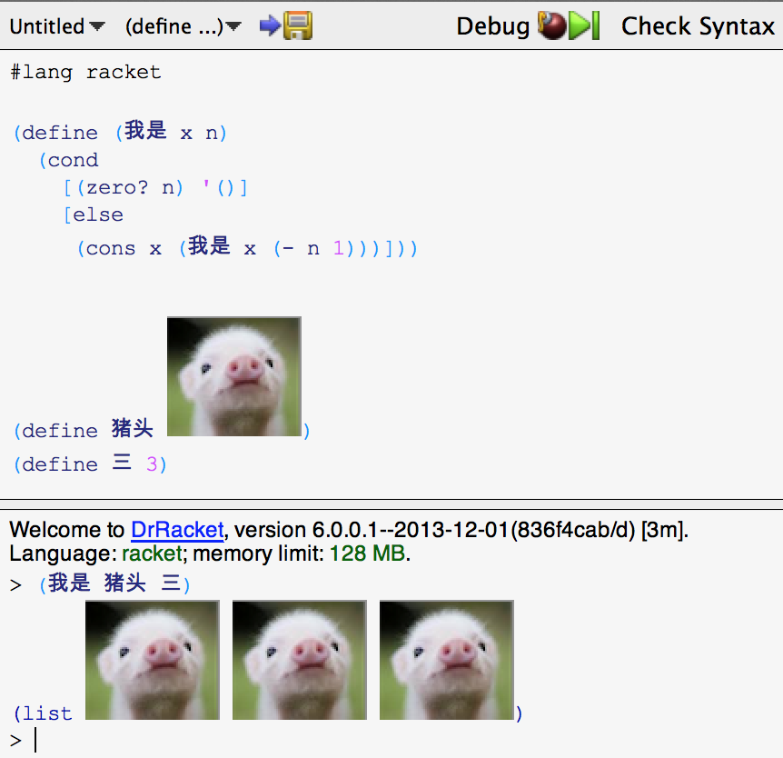

很多人都以为我最爱的程序是那“传说中的王垠40行代码”。那段代码固然是天神衣袖般的优雅，然而它却没有地球的气息和灵魂。其实我最爱的程序是下面这段 Racket 代码。有一天，空中出现一道亮光，隐约的听到一些哼哼声，然后我飞速的写下了它。后来发现，这是数学，艺术以及中西方文化的完美结合，绝版的艺术品。

其中猪头照片来源不明，归其版权者所有。“猪头三”原意不明，可以参考 wikipedia，但我对这个词的常用法跟它的愿意有所不同，含有非常可爱的涵义。